Researcher - Expertise Centre for Digital Media - Hasselt University

Publications
2018
| 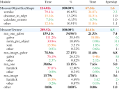 |
GPU-accelerated CellProfiler Imen Chakroun, Nick Michiels and Roel Wuyts In proceedings of the IEEE International Conference on Bioinformatics and Biomedicine (BIBM 2018), Madrid, 3-6 December 2018. AbstractCellProfiler excels at bridging the gap between advanced image analysis algorithms and scientists who lack computational expertise. It lacks however high performance capabilities needed for High Throughput Imaging experiments where workloads reach hundreds of TB of data and are computationally very demanding. In this work, we introduce a GPU-accelerated CellProfiler where the most time-consuming algorithmic steps are executed on Graphics Processing Units. Experiments on a benchmark dataset showed significant speedup over both single and multi-core CPU versions. The overall execution time was reduced from 9.83 Days to 31.64 Hours. |
| 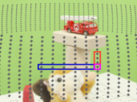 |
Standards-compliant HTTP Adaptive Streaming of Static Light Fields Maarten Wijnants, Hendrik Lievens, Nick Michiels, Jeroen Put, Peter Quax and Wim Lamotte In proceedings of the ACM Symposium on Virtual Reality Software and Technology (VRST 2018), Tokyo, Japan, November 28 - December 1, 2018. AbstractStatic light fields are an effective technology to precisely visualize complex inanimate objects or scenes, synthetic and real-world alike, in Augmented, Mixed and Virtual Reality contexts. Such light fields are commonly sampled as a collection of 2D images. This sampling methodology inevitably gives rise to large data volumes, which in turn hampers real-time light field streaming over best effort networks, particularly the Internet. This paper advocates the packaging of the source images of a static light field as a segmented video sequence so that the light field can then be interactively network streamed in a quality-variant fashion using MPEG-DASH, the standardized HTTP Adaptive Streaming scheme adopted by leading video streaming services like YouTube and Netflix. We explain how we appropriate MPEG-DASH for the purpose of adaptive static light field streaming and present experimental results that prove the feasibility of our approach, not only from a networking but also a rendering perspective. In particular, real-time rendering performance is achieved by leveraging video decoding hardware included in contemporary consumer-grade GPUs. Important trade-offs are investigated and reported on that impact performance, both network-wise (e.g., applied sequencing order and segmentation scheme for the source images of the static light field) and rendering-wise (e.g., disk-versus-GPU caching of source images). By adopting a standardized transmission scheme and by exclusively relying on commodity graphics hardware, the net result of our work is an interoperable and broadly deployable network streaming solution for static light fields. |
| 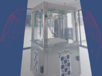 |
Capturing Industrial Machinery into Virtual Reality Jeroen Put, Nick Michiels, Fabian Di Fiore and Frank Van Reeth In proceedings of Articulated Motion and Deformable Objects 2018 (AMDO 2018), Springer International Publishing, Cham, July 2018. AbstractIn this paper we set out to find a new technical and commercial solution to easily acquire a virtual model of existing machinery for visualisation in a VR environment. To this end we introduce an image-based scanning approach with an initial focus on a monocular (handheld) capturing device such as a portable camera. Poses of the camera will be estimated with a Simultaneous Localisation and Mapping technique. Depending on the required quality offline calibration is incorporated by means of ArUco markers placed within the captured scene. Once the images are captured, they are compressed in a format that allows rapid low-latency streaming and decoding on the GPU. Finally, upon viewing the model in a VR environment, an optical flow method is used to interpolate between the triangulisation of the captured viewpoints to deliver a smooth VR experience. We believe our tool will facilitate the capturing of machinery into VR providing a wide range of benefits such as doing marketing, providing offsite help and performing remote maintenance. |
2016
| 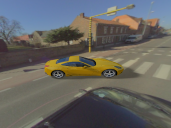 |
Representations and Algorithms for Interactive Relighting Nick Michiels, Advisor: Philippe Bekaert, Doctoral Dissertation, Hasselt University, Belgium, December 2016. AbstractClassic relighting applications are striving to unite the virtual world and the real world by applying computer graphics algorithms to pixel and image-based descriptions. This has allowed them to apply new virtual lighting conditions on real images as well as inserting virtual objects in real environments under credible lighting conditions. However, state-of-the-art representations for geometry, materials and lighting often limit the capabilities and quality of the simulation of light in relighting applications. Spherical harmonics allow for a fast simulation of light, but can only handle low-frequency lighting effects efficiently. In addition, other relighting applications rely on Haar wavelets; which are capable of representing highfrequency lighting information as well as having great compression performance. In theory, Haar wavelets have an efficient forward rendering evaluation method. However, in practice, they need a complex rotation operator and the three factors of the rendering equation can not be constructed dynamically. In addition, they lack smoothness, which is essential for relighting applications. To overcome most of these constraints, this dissertation researched other, possibly better, representations. This dissertation introduces two new underlying basis representations designed to improve cutting edge relighting algorithms. First, we will introduce an efficient algorithm to calculate the triple product integral binding coefficients for a heterogeneous mix of wavelet bases. As mentioned above, Haar wavelets excel at encoding piecewise constant signals, but are inadequate for compactly representing smooth signals for which high-order wavelets are ideal. Our algorithm provides an efficient way to calculate the tensor of these binding coefficients, which is essential for the correct evaluation of the light transport integral. The algorithm exploits both the hierarchical nature and vanishing moments of the wavelet bases, as well as the sparsity and symmetry of the tensor. The effectiveness of high-order wavelets will be demonstrated in a rendering application. The smoother wavelets represent the signals more effectively and with less blockiness than their Haar wavelet counterpart. Using a heterogeneous mix of wavelets allows us to overcome the smoothness problem. However, wavelets still constrain one or several factors of the rendering equation, keeping them inadequate for more interactive rendering applications. For example, visibility is often precalculated and animations are not allowed; and changes in lighting are limited to a simple rotation and are not very detailed. Other techniques compromise on quality and often coarsely tabulate BRDF functions. In the second part of this dissertation, we research how spherical radial basis functions (SRBFs) can be used to overcome most of these problems. SRBFs have already been used in forward rendering, but they still do not guarantee full interactivity of the underlying factors of geometry, materials and lighting. We argue that an interactive representation of the factors is crucial and will greatly improve the flexibility and efficiency of a relighting algorithm. In order to dynamically change lighting conditions or alter scene geometry and materials, these three factors need to be converted to the SRBF representation in a fast manner. This dissertation presents a method to perform the SRBF data construction and rendering in real-time. To support dynamic high-frequency lighting, a multiscale residual transformation algorithm is applied. Area lights are detected through a peak detection algorithm. By using voxel cone tracing and a subsampling scheme, animated geometry casts soft shadows dynamically. At this point, we have two new approaches for evaluating triple product rendering integrals with fewer coefficients and an advantageous smoothness behavior. But how will they perform in actual relighting applications? We tried to answer this question in the final part of this dissertation by conducting experiments in two distinct use cases. A first use case focuses on the relighting of virtual objects with real lighting information of existing scenes. To demonstrate this, we have developed an augmented reality application. The ambition is to augment omnidirectional video, also called 360 degrees video, with natural lit virtual objects and to make the experience more realistic for users. Recent years have known a proliferation of real-time capturing and rendering methods for omnidirectional video. Together with these technologies, rendering devices such as virtual reality glasses have tried to increase the immersive experience of users. Structure-from-motion is applied to the omnidirectional video to reconstruct the trajectory of the camera. Then, the position of an inserted virtual object is linked to the appropriate 360 degrees environment map. State-of-the-art augmented reality applications have often lacked realistic appearance and lighting, but our spherical radial basis rendering framework is capable of evaluating the rendering equation in real-time with fully dynamic factors. The captured omnidirectional video can be directly used as lighting information by feeding it to our renderer, where it is instantly transformed to the proper SRBF basis. We demonstrate an application in which a computer generated vehicle can be controlled through an urban environment. The second use case addresses the relighting of real objects. It will show more practical examples of how an improved representation will influence the quality and time performance of existing inverse rendering and intrinsic image decomposition applications. Such relighting techniques try to extract geometry, material and lighting information of real scenes out of one or multiple input images. First, we show how an inverse rendering technique, as introduced by Haber et al. [Haber et al., 2009], would benefit from the smooth behavior of our high-order wavelet or SRBF representation. To allow for a hierarchical optimization algorithm, where the lower level coefficients are estimated first and then more detailed coefficients are inserted based on the well-posedness of the system, it is essential that the lower level coefficients are good approximates of the signal to estimate and thus have a smooth behavior. Besides a better refinement method, we also show how an integration with our SRBF triple product renderer will reduce the execution time of the optimization process from hours to minutes. Then, in a second application, we conduct experiments on the existing intrinsic image decomposition problem of Barron and Malik [Barron and Malik, 2015], where we used our SRBF renderer in combination with a prior based optimization method. We achieve this by adapting the SRBF rendering framework to export the proper gradients for the L-BFGS minimization step. |
| 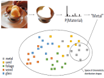 |
Material-Specific Chromaticity Priors Jeroen Put, Nick Michiels and Philippe Bekaert, In proceedings of The 27th British Machine Vision Conference (BMVC 2016), BMVA Press, York, UK, September 2016. AbstractRecent advances in machine learning have enabled the recognition of high-level categories of materials with a reasonable accuracy. With these techniques, we can construct a per-pixel material labeling from a single image. We observe that groups of high-level material categories have distinct chromaticity distributions. This fact can be used to predict the range of the absolute chromaticity values of objects, provided the material is correctly labeled. We explore whether these constraints are useful in the context of the intrinsic images problem. This paper describes how to leverage material category identification to boost estimation results in state-of-the-art intrinsic images datasets. |
2015
| 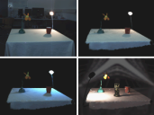 |
Using Near-Field Light Sources to Separate Illumination from BRDF Jeroen Put, Nick Michiels and Philippe Bekaert, In proceedings of The 26th British Machine Vision Conference (BMVC 2015), pp. 16.1-16.13, BMVA Press, Swansea, UK, September 2015. AbstractSimultaneous estimation of lighting and BRDF from multi-view images is an interesting problem in computer vision. It allows for exciting applications, such as flexible relighting in post-production, without recapturing the scene. Unfortunately, the estimation problem is made difficult because lighting and BRDF have closely entangled effects in the input images. This paper presents an algorithm to support both the estimation of distant and near-field illumination. Previous techniques are limited to distant lighting. We contribute by proposing an additional factorization of the lighting, while keeping the rendering efficient and additional data compactly stored in the wavelet domain. We reduce complexity by clustering the scene geometry into a few groups of important emitters and calculate the emitting powers by alternately solving for illumination and reflectance. We demonstrate our work on a synthetic and real datasets and show that a clean separation of distant and near-field illumination leads to a more accurate estimation and separation of lighting and BRDF. |
| 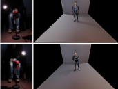 |
Interactive Relighting of Virtual Objects under Environment Lighting
Nick Michiels, Jeroen Put and Philippe Bekaert, In proceedings of The 10th International Conference on Computer Graphics Theory and Applications (GRAPP 2015), pp. 220-228, Berlin, Germany, March 2015. AbstractCurrent relighting applications often constrain one or several factors of the rendering equation to keep the rendering speed real-time. For example, visibility is often precalculated and animations are not allowed, changes in lighting are limited to simple rotation or the lighting is not very detailed. Other techniques compromise on quality and often coarsely tabulate BRDF functions. In order to solve these problems, some techniques have started to use spherical radial basis functions. However, solving the triple product integral does not guarantee interactivity. In order to dynamically change lighting conditions or alter scene geometry and materials, these three factors need to be converted to the SRBF representation in a fast manner. This paper presents a method to perform the SRBF data construction and rendering in real-time. To support dynamic high-frequency lighting, a multiscale residual transformation algorithm is applied. Area lights are detected through a peak detection algorithm. By using voxel cone tracing and a subsampling scheme, animated geometry casts soft shadows dynamically. We demonstrate the effectiveness of our method with a real-time application. Users can shine with multiple light sources onto a camera and the animated virtual scene is relit accordingly.Results |
2014
| 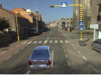 |
Interactive Augmented Omnidirectional Video with Realistic Lighting
Nick Michiels, Lode Jorissen, Jeroen Put and Philippe Bekaert, In proceedings of The International Conference on Augmented and Virtual Reality (SALENTO AVR 2014), pp. 247-263, Lecce, Italy, September 2014. AbstractThis paper presents the augmentation of immersive omnidirectional video with realistically lit objects. Recent years have known a proliferation of real-time capturing and rendering methods of omnidirectional video. Together with these technologies, rendering devices such as Oculus Rift have increased the immersive experience of users. We demonstrate the use of structure from motion on omnidirectional video to reconstruct the trajectory of the camera. The position of the car is then linked to an appropriate 360 degrees environment map. State-of-the-art augmented reality applications have often lacked realistic appearance and lighting. Our system is capable of evaluating the rendering equation in real-time, by using the captured omnidirectional video as a lighting environment. We demonstrate an application in which a computer generated vehicle can be controlled through an urban environment.Results
|
|
| 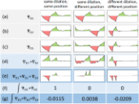 |
Product Integral Binding Coefficients for High-order Wavelets
Nick Michiels, Jeroen Put and Philippe Bekaert, In proceedings of The 11th International Conference on Signal Processing and Multimedia Applications (SIGMAP 2014), pp 17-24., Vienna, Austria, August 2014. AbstractThis paper provides an efficient algorithm to calculate product integral binding coefficients for a heterogeneous mix of wavelet bases. These product integrals are ubiquitous in multiple applications such as signal processing and rendering. Previous work has focused on simple Haar wavelets. Haar wavelets excel at encoding piecewise constant signals, but are inadequate for compactly representing smooth signals for which high-order wavelets are ideal. Our algorithm provides an efficient way to calculate the tensor of these binding coefficients. The algorithm exploits both the hierarchical nature and vanishing moments of the wavelet bases, as well as the sparsity and symmetry of the tensor. We demonstrate the effectiveness of high-order wavelets with a rendering application. The smoother wavelets represent the signals more effectively and with less blockiness than the Haar wavelets of previous techniques. |
|
| 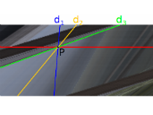 |
A qualitative comparison of MPEG view synthesis and light field rendering
Lode Jorissen, Patrik Goorts, Bram Bex, Nick Michiels, Sammy Rogmans, Philippe Bekaert and Gauthier Lafruit, In proceedings of 3DTV-Conference: The True Vision - Capture, Transmission and Display of 3D Video (3DTV-CON 2014), pp. 1-4, Budapest, Hungary, July 2014. AbstractFree Viewpoint Television (FTV) is a new modality in next generation television, which provides the viewer free navigation through the scene, using image-based view synthesis from a couple of camera view inputs. The recently developed MPEG reference software technology is, however, restricted to narrow baselines and linear camera arrangements. Its reference software currently implements stereo matching and interpolation techniques, designed mainly to support three camera inputs (middle-left and middleright stereo). Especially in view of future use case scenarios in multi-scopic 3D displays, where hundreds of output views are generated from a limited number (tens) of wide baseline input views, it becomes mandatory to fully exploit all input camera information to its maximal potential. We therefore revisit existing view interpolation techniques to support dozens of camera inputs for better view synthesis performance. In particular, we show that Light Fields yield average PSNR gains of approximately 5 dB over MPEG's existing depth-based multiview video technology, even in the presence of large baselines. |
|
| 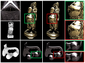 |
Exploiting Material Properties to Select a Suitable Wavelet Basis for Efficient Rendering
Jeroen Put, Nick Michiels and Philippe Bekaert, In proceedings of The 9th International Conference on Computer Graphics Theory and Applications (GRAPP 2014), pp. 218-224, Lisbon, Portugal, Januari 2014. AbstractNearly-orthogonal spherical wavelet bases can be used to perform rendering at higher quality and with significantly less coefficients for certain spherical functions, e.g. BRDF data. This basis avoids parameterisation artifacts from previous 2D methods, while at the same time retaining high-frequency details in the lighting. This paper demonstrates the efficiency of this representation for rendering purposes. Regular 2D Haar wavelets can still occasionally perform better, however. This is due to their property of being fully orthogonal. An important novelty of this paper lies in the introduction of a technique to select an appropriate wavelet basis on-the-fly, by utilising prior knowledge of materials in the scene. To show the influence of different bases on rendering quality, we perform a comparison of their parameterisation error and the compression performance. |
{kind=link}
2013
| 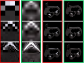 |
High-order wavelets for hierarchical refinement in inverse rendering
Nick Michiels, Jeroen Put, Tom Haber, Martin Klaudiny and Philippe Bekaert, In Poster proceedings of The 40th International Conference and Exhibition on Computer Graphics and Interactive Techniques (SIGGRAPH 2013), pp. 99-99, Anaheim, California, USA, August 2013. AbstractIt is common to use factored representation of visibility, lighting and BRDF in inverse rendering. Current techniques use Haar wavelets to calculate these triple product integrals efficiently [Ng et al. 2004]. Haar wavelets are an ideal basis for the piecewise constant visibility function, but suboptimal for the smoother lighting and material functions. How can we leverage compact high-order wavelet bases to improve efficiency, memory consumption and accuracy of an inverse rendering algorithm? If triple product integrals can be efficiently calculated for higher-order wavelets, the reduction in coefficients will reduce the number of calculations, therefore improving performance and memory usage. Some BRDFs can be stored five times more compactly.Current inverse rendering algorithms rely on solving large systems of bilinear equations [Haber et al. 2009]. We propose a hierarchical refinement algorithm that exploits the tree structure of the wavelet basis. By only splitting at interesting nodes in the hierarchy, large portions of less important coefficients can be skipped. The key of this algorithm is only splitting nodes of the wavelet tree that contribute to the solution of the system M (see Algorithm 1). It is critical to use high-order wavelets for this, as Haar wavelets can only introduce high frequencies which lead to blockiness. |
2011
| 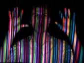 |
Scene acquisition using structured light and registration
Nick Michiels, Bert De Decker, Tom Haber and Philippe Bekaert, Master Dissertation, Hasselt University, Diepenbeek, Belgium, July, 2011. AbstractBuilding 3D models from existing objects in the world is a fast growing domain of computer vision and computer graphics. It is used within various projects such as for example entertainment or archeology. In combination with the progress on computer technology and affordable hardware, it is possible to render this dense 3D information.This master thesis describes an active correspondence technique, i.e. structured light, which obtains the 3D information from a scene using only a camera and projector. The thesis introduces a number of structured light patterns that can be used and that may or may not allow to solve the correspondence problem. A first category of patterns is called time-multiplexing. These are very robust and can obtain a large number of correspondences. The main drawback is that they can’t be used for moving scenes. In such situations it is better to use spatial neighborhood patterns. A spatial neighborhood pattern codes the position of a pixel in a pattern based on the neighborhood of the pixel. This makes it possible to code all the information in only one pattern. The most popular and formal technique based on a spatial neighborhood scheme are using De Bruijn sequences. In addition, there are also a number of non-formal spatial neighborhood patterns discussed. There will be shown that the choice of a good pattern in combination with a global optimization technique, i.e. Dynamic Programming, allows it to obtain a 3D point cloud out of a single captured frame. The camera moves through the scene and for every frame the structured light technique obtains a 3D point cloud. These point clouds each have a different view of the scene. To obtain a full model of the scene, it is necessary that all these point clouds will be merged together. This step is the so called Registration of point clouds. The most popular technique is Iterative Closest Point (ICP), which searches iteratively for the best transformation to slide a point cloud in another one. These thesis will describe a great amount of alternatives of ICP, for example the use of geometric parameters (i.e. normal and curvature). The results will show that ICP is very robust for highly similar point clouds. But the algorithm faces many problems when the point cloud doesn’t overlap enough or does not contain enough depth. Results
|
{kind=link}
{kind=link}
{kind=link}
{kind=link}
2009
| 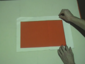 |
Augmented Reality for Workbenches
Nick Michiels, Tom Cuypers, Yannick Francken and Philippe Bekaert, Bachelor Dissertation, Hasselt University, Diepenbeek, Belgium, July, 2009. AbstractIn this bachelor thesis I’ll try to recognize objects of a workbench by videotaping the workbench. This objects will be replaced by new projected objects. To accomplish this we need a workbench on which we project. Besides the projector we also videotape the workbench. In my setup I will place the projector en videotape perpendicular to the workbench. In the beginning I only use blank pages as objects. There are no distinctions between the pages.To accomplish this bachelor thesis there are some steps we must follow:- First we have the calibration. We need a calibration step to know the exact relationship between the coordinates of the screen and the coordinates of the workbench. This step will be fully automatic.- The second step is the image recognition. We have some incoming frames from the camera. Our job is to distinguish the blank pages from the workbench.- If the separation of the blank pages is done we can map the projection to the coordinates of the blank pages (expressed in coordinates of the workbench). At this point we are ready to project onto the workbench. This step also includes a mechanism to detect a rotation or translation of the blank page as fast as possible. The projection should be updated as fast as possible.My second goal is to create something like the Toolkit library. The main purpose is to give every blank page a marker. This marker will be recognized in the step of image recognition. Corresponding to the marker, the projector can treat each page different. For example on one page we project a movie while on the other we project a pdf. I’ll also do some research for choosing the marker as best as possible. As an extra I could recognize several kinds of objects and not just blank pages anymore. As second extension I could make a second setup and make a network between the two setups. |